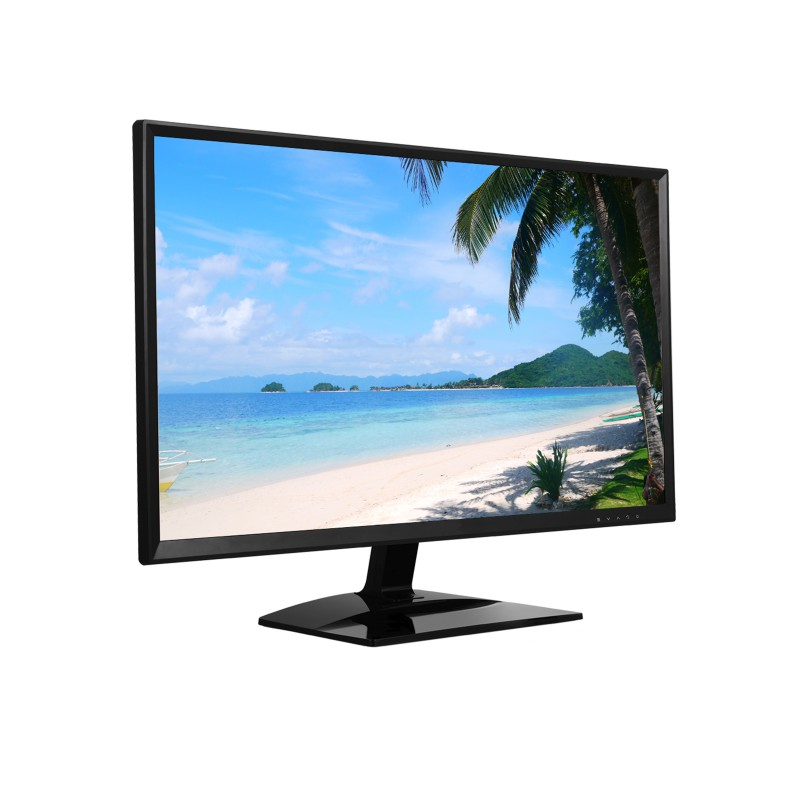
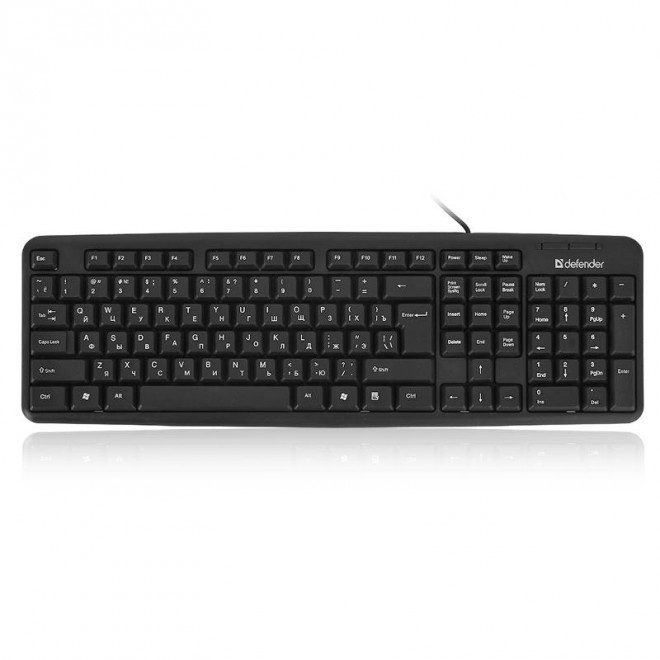
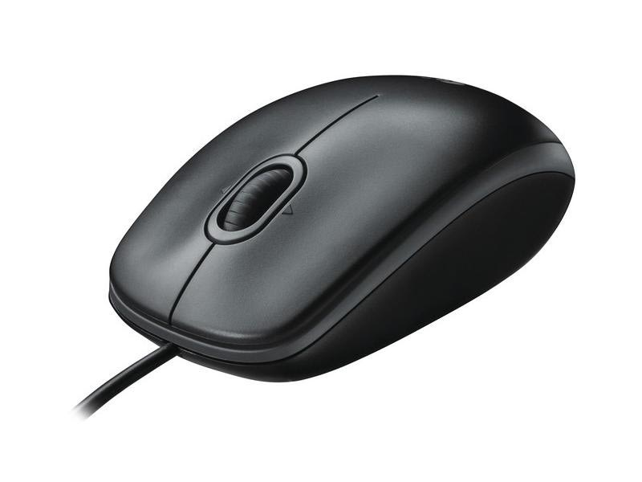
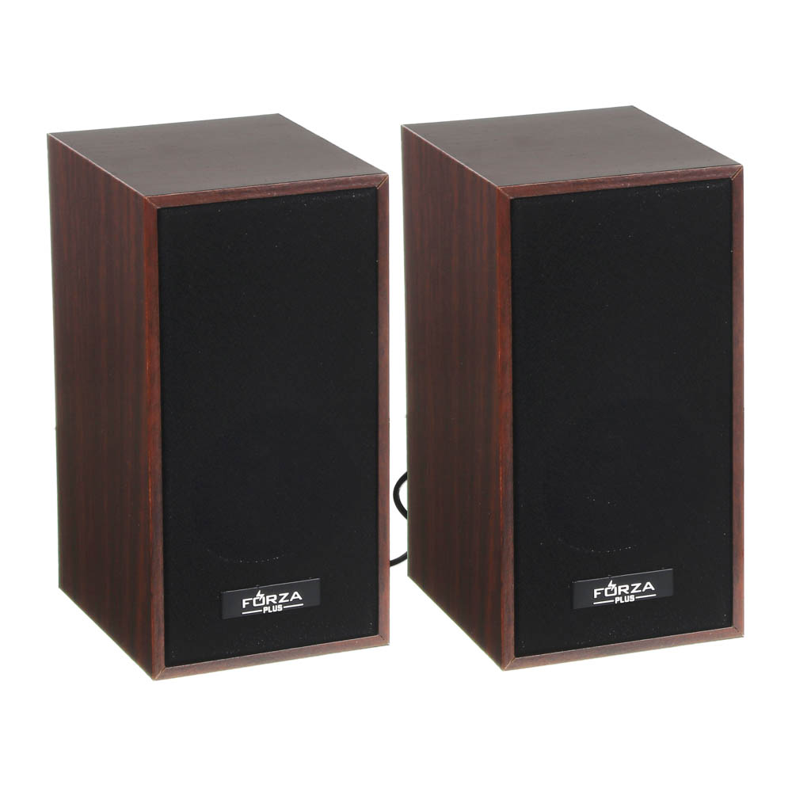
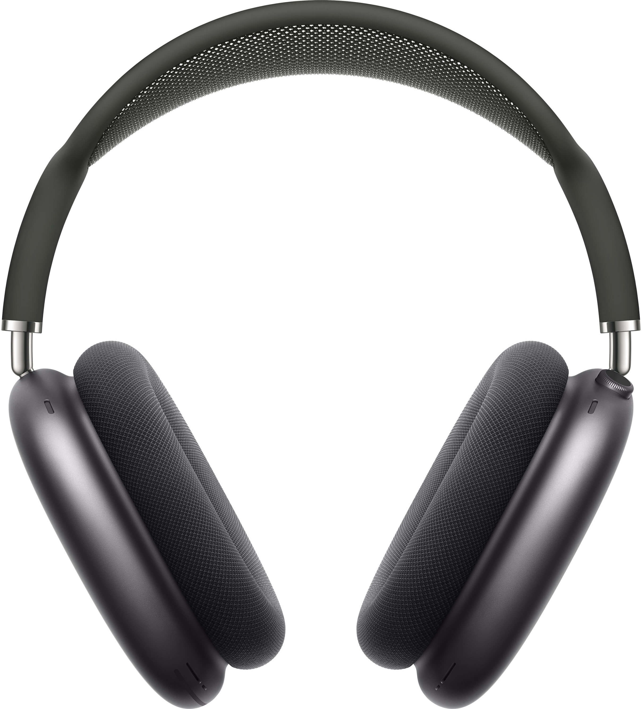
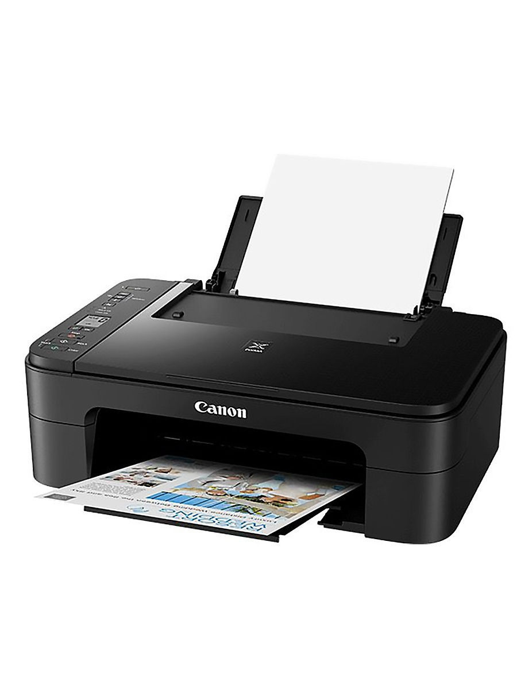

Периферийные устройства
Для управления системным блоком человеку нужны устройства ввода и вывода. Разберем самые важные из них.
-
Монитор.
Монитор само собой нужен, чтобы видеть то, с чем мы работаем. Видеокарта подает изображение на монитор. Между собой они подключены кабелем.
-
Клавиатура.
Клавиатура предназначена для ввода информации, ну само собой какая работа без полноценной клавиатуры. Текст напечатать, в игры поиграть, в интернете посидеть и везде нужна клавиатура.
-
Мышь.
Мышь нужна чтобы управлять курсором на экране. Водить его в разные стороны, кликать, открывать файлы и папки, вызывать различные функции и много другое. Также, как и без клавиатуры, без мыши никуда.
-
Колонки.
Колонки - звуковое устройство, которое подключается к компьютеру проводами или беспроводным способом, для воспроизведения звука.
-
Наушники.
Наушники так же используются для звуковоспроизведения, но расчитаны на одного пользователя.
-
Принтер и сканер.
Принтер и сканер используются для работы с документами. Принтер позволяет распечатать бумажные документы, а сканер поможет получить цифровую копию существующих бумаг.